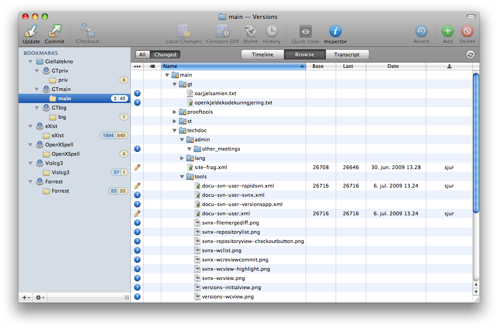
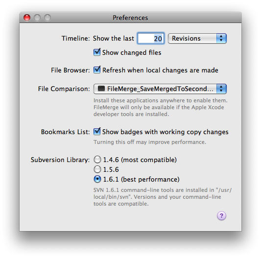

Start Versions and click one of the big buttons Repository (if you
don't have a local working copy already) or Working Copy (if you do have a
working copy already) - fill in the details:
When all is set up, Versions will give you a status listing directly in the window.
It will also indicate
how many commits are in the repository since you last updated (2 in the picture below).
You can switch between
only seeing the modified (and unknown) files, or all files.

By turning on the inspector, it is very easy to change common attributes:
or edit the ignore list:
Even with Versions (as compared to SvnX), diffs will open in
FileMerge. But Versions do a better job at providing the real working copy file, and
with a small script (found
in $GTHOME/gt/src/filemerge-tools/ - run make there to install), all files will open
with the correct encoding, and merges done using FileMerge will automatically be saved
back to the working copy
file.
Make sure that after you have installed the script (named FileMerge_SaveMergedToSecondFile.sh),
you open Versions > Preferences, and select the script in the File
Comparison drop-down menu:
